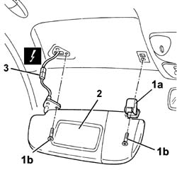
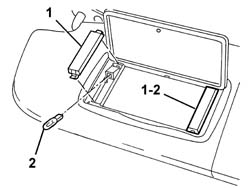

7065C33 SUN BLIND WITH COURTESY MIRROR AND COURTESY LIGHT ONE LH OR RH R R
- Path
- Procedures > 70 FITTINGS > 7065 SEAT BELTS AND ACCESSORIES > 7065C ACCESSORIES AND DECORATIONS > 7065C33 SUN BLIND WITH COURTESY MIRROR AND COURTESY LIGHT ONE LH OR RH R R
- Kind
- repair procedure (removal / refitting; the operation number is the code)
- Applies to
- all engines; all production periods
- Interactive page
- https://sloeber94.github.io/elrnDB-aGt/en/#/125001998
Applies to: all engines; all production periods
 Removing
Removing
 Refitting
Refitting1. Lift up the protection (1a) and undo the bolts (1b) fixing the sun visor.
2. Move the sun visor slightly.
3. Disconnect the electrical connection.
Name | Connector | |
|---|---|---|
3 | Driver's sun blind light | See G31 DRIVER'S SUNSHADE LIGHT |
Name | Connector | |
|---|---|---|
3 | Passenger sun blind light | See G32 PASSENGER SUN BLIND LIGHT ( REAR ) |

Applies to: all engines; all production periods
1. Take off the courtesy light cover if necessary.
2. Remove the bulb (press-fitted).

Applies to: all engines; all production periods
Refitting
RemovingCheck that the sun visor is undamaged.
If removed, fit the bulb and fit the courtesy light cover.
Connect the electrical connection.
Position the sun visor and secure it using the bolts, then close the protective covers.
Check that the sun blind moves smoothly and the courtesy lights are working.